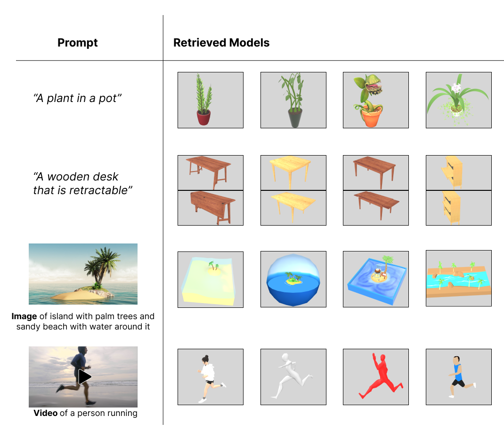
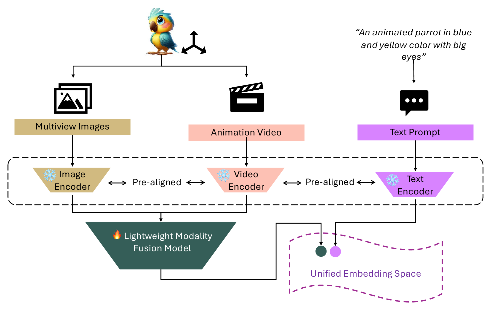
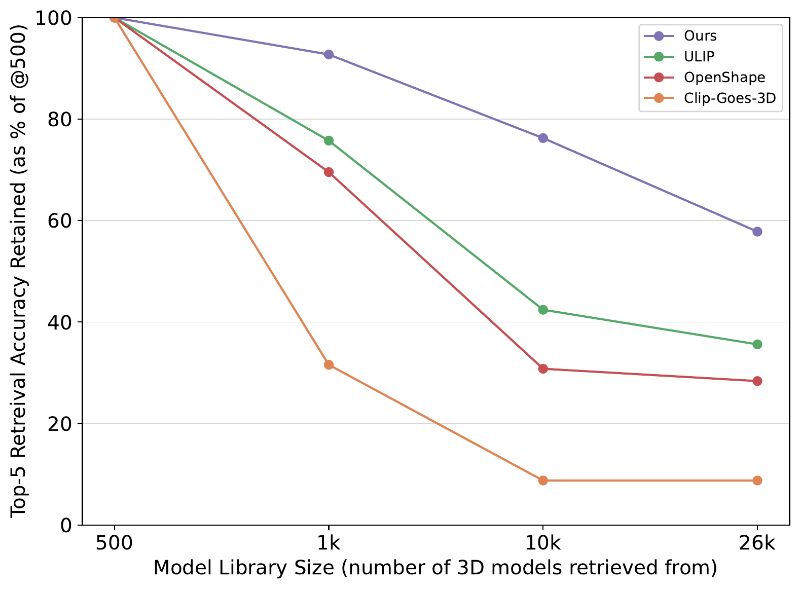
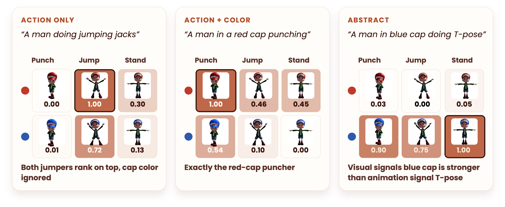

3D models retrieved for text, image, and video prompts, including ones that describe motion, like "a wooden desk that is retractable" or a video of a person running.
Virtual Reality (VR) content creators today face lengthy trial-and-error cycles when searching for 3D models, which relies heavily on manually annotated metadata. However, this approach struggles to capture the rich visual and dynamic details inherent to 3D models. Prior work has attempted to address this by rendering models as sets of images, but has largely remained restricted to category-level search and static geometry. In VR environments where asset behavior is often as important as appearance, we present a visual and motion aware 3D retrieval method that represents each model through multiview renders and short animations, extending search beyond static geometry to include dynamic behaviors. Pretrained image–text and video–text encoders extract features that are combined into a unified embedding by training a lightweight multimodal fusion model. This enables 3D model retrieval from text, images, and videos without requiring abundant and detailed ground truth data, supporting more nuanced and semantically meaningful search. On text queries referencing both appearance and motion, our method achieves a 23-percentage-point improvement in top-5 retrieval accuracy on the Objaverse dataset, while also attaining competitive accuracy on the ModelNet40 dataset and maintaining robustness as the model library size scales. A user study further shows that participants strongly preferred our retrievals compared to the one used by Sketchfab, one of today's most widely used 3D repositories. To support future work, we release 26k multi-view renders, animation clips, and 500 manually annotated visual and motion aware captions for the Objaverse dataset.

Unlike images and videos on the Internet, 3D models rarely come with detailed captions, especially ones that describe motion, which makes it difficult to train a dedicated 3D–text encoder. Instead, we adopt a proxy strategy: each 3D model is rendered from six canonical views (±x, ±y, ±z) and as a short animation clip, and encoded with frozen, pre-aligned LanguageBind image and video encoders. A lightweight image-fusion model, trained without any captions using cosine-similarity and batch-wise contrastive self-consistency losses, pools the six view embeddings into one multiview image embedding. This is then averaged with the video embedding to form the final 3D model representation. Surprisingly, this simple mean outperforms a trained multimodal fusion model, suggesting that the pretrained encoders are already well aligned across modalities.
Because the final embedding lives in the same space as the text encoder, models can be retrieved directly by cosine similarity to a text, image, or video query. All embeddings are stored in a ChromaDB vector database, giving fast nearest-neighbor search across tens of thousands of models. The method is encoder-agnostic: any model with a unified image–video–text space can be swapped in.

Top-5 accuracy retained (relative to a 500-model library) as the library grows to 1k, 10k, and 26k models. Baselines such as OpenShape and ULIP drop sharply, while our method retains 57% of its top-5 accuracy at 26k candidates.

Six variants of the same character performing three actions (punching, jumping jacks, T-pose), each with a red or blue cap. Scores are row-normalized relative similarity. Action-only prompts rank both matching animations on top. Prompts that combine action and color isolate the exact model. Visual attributes like cap color often act as stronger anchors than the motion, since they show up in both the image and the video embeddings.
We release six canonical multiview renders and a 6-second animation clip for over 26,000 Objaverse models. To our knowledge, this is the first large-scale release of rendered videos for 3D models. We also release a benchmark of 500 manually annotated captions that describe both appearance and motion, plus the Blender rendering pipelines used to make the dataset. Everything is available on Hugging Face, and the code is on GitHub.
git clone --recurse-submodules https://github.com/srutisrinidhi/3DModelSearch
cd 3DModelSearch
export LANGUAGEBIND_PATH="$(pwd)"
python scripts/main.py --query "a red sports car" \
--models_csv out/models_data.csv --persist_directory databases/model_databaseSee the README for full setup, precomputed downloads, and the interactive Gradio demo.
This work was supported by the NSF under award CNS-1956095 and Bosch Research.